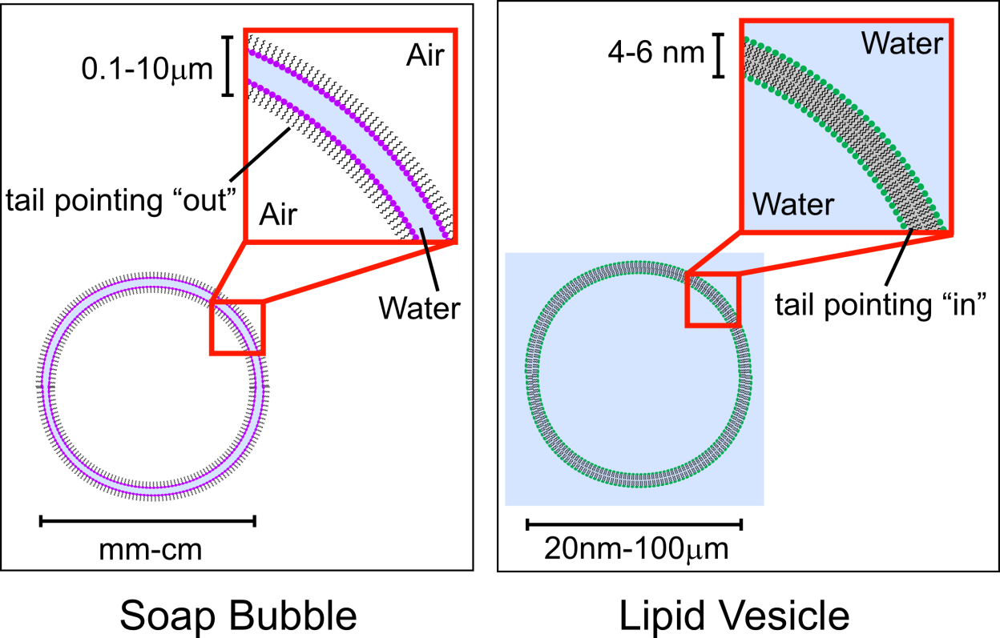

Bubble Lab: Teacher Notes
Materials
flat pans
straw-and-string membrane holders (see http://bit.ly/19tIlas for holder and soap solution instructions)
soap solution
thread (~6 inches long, already knotted into a circle)
pencils
2-inches of plastic tubing big enough to fit a pencil through
100 mL beakers
olive oil in dropper bottles
ethanol or rubbing alcohol in dropper bottles
food coloring
I'm thinking I'd throw a few other objects in the mix like glass stirring rods, toothpicks, etc. The three methods that I would coax them towards are in this video (http://www.youtube.com/watch?v=FeJElRbPMxk), but you never know when the kids are going to come up with something clever. Or, it builds character to go through a few failed attempts with red herrings. Either one.
I'm trying to achieve four things with this activity.
Reinforce the idea of membrane fluidity
Introduce the idea that materials will eventually have to pass through a cell's membrane, and getting them to brainstorm some ways this might happen instead of me telling them about it
Reinforce the idea of solubility, and that chemistry will determine whether or not a molecule can move through a membrane (as opposed to "the cell decides whether to let it in or keep it out). Additionally, extend the solubility idea to explain why alcohol can kill bacteria (including Yersinia pestis !) using chemical thinking instead of "the alcohol attacks the bacteria's membrane."
Start them on the process of using scientific argumentation, asking them to support their explanations with observations and to explicitly say why those observations support their proposed theory. They hate this part. At first.
Answers that I'll be looking for:
3) Raise the membrane holder up to the light. Is there any evidence to support the idea that molecules are always in motion? Describe your observations below, and explain how those observations support your answer.
I expect them to mention that they can see the swirling colors, and to explicitly tie that into constant molecular motion. I won't let them get away with just an observation.
4) Twist the straw handles in opposite directions and bend the film into different configurations.
What do you observe?
The membrane is flexible.
Based on your observations, do you think that the cell membrane is a solid, liquid, or gas? Explain your choice.
Liquid, because it can flow (unlike a solid) but it's coherent (unlike a gas). Mainly I'm trying to keep nudging them toward the idea that the membrane is fluid.
5) Create a fresh bubble. Try to push the pencil through the membrane without popping it. You may use any of the materials provided for you on the side lab table. If you have an idea that requires materials that are not provided, ask me and I'll see if I can get them for you.
Describe the method you used to push the pencil through.
6) Now, find another way to get the pencil through the membrane. How did you do it?
7) Now, find another way to get the pencil through the membrane. How did you do it?
http://www.youtube.com/watch?v=FeJElRbPMxk has the three methods I'm looking for, although there might be others. I expect some of the kids are going to share methods, which I'm kind of okay with.
8) Using what you figured out from the pencil techniques, see if you can form a hole in the membrane, and then seal it back up again. How did you do it?
The thread trick would work, or a kid could argue that poking the plastic tube through counts as well.
9) Based on what you know about how lipid (and soap) molecules behave, speculate as to why your methods work.
I'm looking for some acknowledgment that anything that goes through the membrane needs to have a nonpolar outside (thus having to dip it in the soap solution first). When discussing the lab later, it would probably be worth reminding them that unlike a soap bubble, a cell membrane won't "pop" if something polar tries to go through it – the object just won't be able to travel through (see comment on step 4)
10) If you were a cell, how might you use these type of techniques to get molecules back and forth across your membrane?
Possible answers: create a tunnel, encase it in membrane first, the kids might come up with more valid options
13) By now, you should be able to predict what you will see when you add three drops of oil (olive, if you're curious) to the surface of the water. The harder part will be drawing a molecular representation of what's happening in the space below.
Use for the water molecules and for the lipids.
The kids will probably draw a standard bilayer, which would be fine. Technically, most of the lipids would probably be sitting at the surface with their non-polar butts up in the air, but I'll be surprised if any of the kids think of that.
14) Again, you can probably predict what you would see if you added food coloring to the water. Instead, add a drop or two of food coloring right in the middle of an oil blob.
Do you think that the dye molecules are polar, or are they nonpolar?
polar (some of the kids might make the accurate acknowledgment that food
coloring is mostly water)
What observation did you make when you did this, and why does that support your claim for part a?
Observation – dye molecules did not diffuse into the lipids
Why this supports the "polar" claim – if the dye molecules were nonpolar, they would be comfortable diffusing amongst the lipids. They apparently are not.
15) Wash out your beaker (with soap, and make sure you rinse the beaker well). Refill it with water, and add three drops of oil again. Take the alcohol dropper and add three drops of alcohol to the beaker.
a) Draw a molecular representation of what the molecules in the beaker look like now. Use for the alcohol molecules (EtOH is the scientific abbreviation for ethanol).
Any drawing where the EtOH is separating the water from the lipids would be
acceptable to me.
b) Why did you draw your arrangement the way you did?
Some acknowledgment that the lipids are not huddled together like they were initially, so something must be coming between them, and it ain't gonna be water.
With this information in mind, explain why we use alcohol to disinfect cuts and scrapes. (Bonus: see if you can also explain why it hurts like heck when we put alcohol into a cut.)
Alcohol will disrupt the bacteria's cell membranes in the same way that it did the lipid clumps. (It also disrupts our cell membranes.)
MEMBRANE MODEL: The Bubble Lab
Soap bubbles are bilayers very similar to phospholipid membranes, so they can be
used to investigate some of the properties of the cell membrane. The soap bubble
bilayer is made of molecules with a hydrophilic head and a hydrophobic tail, except
that the surrounding medium (air) is non-polar, so the tails of the bilayer face outward
and the polar heads form the inside. Other than this orientation, however, a soap membrane and a cell membrane behave pretty much the same.

Procedure
1) Pour soap solution to about 1 inch depth in your pan. Be careful not to make
froth as you pour.
2) Holding the straws of the membrane holder, immerse it into the pan of soap
solution. Slowly raise it out of the pan and allow the excess soap to drip off. Hold up
the soap film-filled membrane holder. You now have a sample of cell membrane to experiment with.
3) Raise the membrane holder up to the light. Is there any evidence to support the idea that molecules are always in motion? Describe your observations below, and explain how those observations support your answer.
4) Twist the straw handles in opposite directions and bend the film into different configurations.
What do you observe?
Based on your observations, do you think that the cell membrane is a solid, liquid, or gas? Explain your choice.
(The soap bilayer is actually less flexible than a cell membrane because a cell membrane is supported on both sides, one side by the cytoplasm and the other by the water that the cell is bathed in. So whatever you are doing to the soap film, plus more, can be done to cell membranes without breaking them.)
5) Create a fresh bubble. Try to push the pencil through the membrane without popping it. You may use any of the materials provided for you on the side lab table. If you have an idea that requires materials that are not provided, ask me and I'll see if I can get them for you.
Describe the method you used to push the pencil through.
6) Now, find another way to get the pencil through the membrane. How did you do it?
7) Now, find another way to get the pencil through the membrane. How did you do it?
8) Using what you figured out from the pencil techniques, see if you can form a hole in the membrane, and then seal it back up again. How did you do it?
9) Based on what you know about how lipid (and soap) molecules behave, speculate as to why your methods work.
10) If you were a cell, how might you use these type of techniques to get molecules back and forth across your membrane?
11) Use a straw to create a few bubbles in your soap solution. Coax the bubbles
toward each other and try to get them to fuse into a single big bubble. Then try and split a small bubble off the big bubble. Cells do this all the time with their membranes, although we'll see more of it when we start talking about eukaryotic cells.
MEMBRANE MODEL: Breaking It Apart
12) Put the soapy pan aside for the moment, and get a 100 mL beaker and fill it with water.
13) By now, you should be able to predict what you will see when you add three drops of oil (olive, if you're curious) to the surface of the water. The harder part will be drawing a molecular representation of what's happening in the space below.
Use for the water molecules and for the lipids.
14) Again, you can probably predict what you would see if you added food coloring to the water. Instead, add a drop or two of food coloring right in the middle of an oil blob.
Do you think that the dye molecules are polar, or are they nonpolar?
What observation did you make when you did this, and why does that support your claim for part a?
15) Wash out your beaker (with soap, and make sure you rinse the beaker well). Refill it with water, and add three drops of oil again. Take the alcohol dropper and add three drops of alcohol to the beaker.
a) Draw a molecular representation of what the molecules in the beaker look like now. Use for the alcohol molecules (EtOH is the scientific abbreviation for ethanol).
b) Why did you draw your arrangement the way you did?
With this information in mind, explain why we use alcohol to disinfect cuts and scrapes. (Bonus: see if you can also explain why it hurts like heck when we put alcohol into a cut.)